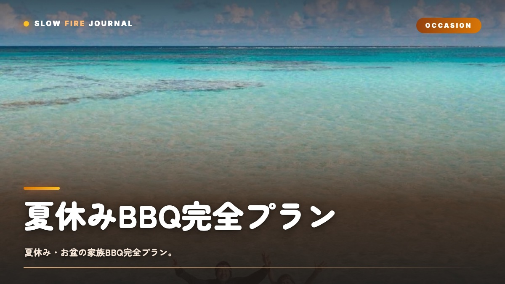

夏休みBBQ完全プラン — 家族で「忘れられない夏」を作る7日間カレンダー
「今年の夏休み、子供と何しよう？」——毎年そう考えているうちに、気づいたら8月が終わっていた。そんな経験、ありませんか。じつは夏休みって、子供の人生で40日ほどしかありません。小学校6年間で240日、しかも親子で本当に向き合える時間として残るのは、実質その半分くらいなんですよね。だからこそ、BBQはその短い時間をいちばん濃く記録してくれる装置だと思っています。煙、火、川の音、夜風、虫の声——10年後、20年後に子供がふと思い出すのは、ディズニーランドの何倍も鮮明に、あの夏のBBQの匂いだったりするんです。この記事では、夏休み7日間の家族BBQプランとして、週末ごとのテーマ・メニュー・暑さ対策・子供との料理・写真の撮り方まで、忘れられない夏のつくり方を、ぜんぶお話ししていきますね。

夏休みBBQの哲学 — 「忘れられない夏」とは何か
「忘れられない夏」というフレーズ、観光業界やCMで使い古されていますよね。でも、本当の意味でそれをつくれている家族って、じつはそんなに多くないんじゃないかなと思います。個人的には、忘れられない夏の正体は「特別なイベント」ではなく「五感の総量」だと思っています。
たとえばディズニーランドに行った日のこと、子供はちゃんと覚えています。でも「何時に乗った何のアトラクションが何分待ちだったか」までは、たいてい覚えていないんですよね。覚えているのは、暑かった、人混みだった、お父さんが疲れていた——そういう感覚のほうなんです。記憶って、視覚よりも嗅覚と触覚と聴覚に強く結びついていくものなんですよね。
その点で、BBQは本当に強いんです。煙の匂い、肉の音、炭のパチパチ、汗の塩気、川の冷たさ、夜の暗がり——どれもが五感をフルに動かしてくれます。だから子供は、お金をかけた旅行よりも、近所の公園でやったたった1回のBBQを、生涯ずっと覚えていたりするんですよね。
7日間カレンダー — 夏休みの背骨を作る
夏休みは40日ありますけど、さすがにBBQを毎日やるのは現実的じゃないですよね。そこでおすすめなのが、週1回×7週、もしくは要所の7日をBBQデイに決めてしまうこと。これだけで夏休みに「背骨」が一本通るんです。子供にとっては「次のBBQまであと何日」というカウントダウンが、そのまま夏の生活リズムになっていくんですよね。
Day 1：夏休み開幕BBQ（7月20日前後）
テーマは「これから40日が始まる」という宣言です。まずは庭やベランダで気軽にどうぞ。ソーセージ・ハンバーガー・とうもろこしみたいな、子供が一番よろこぶ定番をそろえてあげてください。ここで夏休みのテンションを、一気に最大値まで持ち上げてあげるイメージです。
Day 2：はじめての本格BBQ（7月最終週）
公園のBBQ場で、少しだけレベルアップしてみましょう。BBQ食材ガイドを参考に、塊肉を1つ投入してみてください。子供に「いつもと違う」を体験させてあげる回です。火を起こす工程や、トングの使い方を見せてあげる、ちょっとした教育回でもありますね。
Day 3：水辺BBQ（8月第1週）
川辺・湖畔・海辺で、水と火を同時に楽しむ回です。個人的には、子供の人生でいちばん五感が刺激される回だと思っています。冷水で冷やしたスイカや流しそうめんと組み合わせると、写真の解像度まで一気に上がりますよ。
Day 4：お盆ファミリーBBQ（8月13〜15日）
祖父母や親戚を巻き込む、世代横断のBBQです。3世代が同じ火を囲むって、子供にとっては人生のなかでもけっこう大事なシーンになるんですよね。料理は子供向けと祖父母向けを分けて用意してあげると、うまくいきますよ。
Day 5：キャンプ場1泊BBQ（8月中旬）
「夕方〜翌朝」をテーマにした宿泊型の回です。夕食BBQと、朝食のグリルベーコンエッグの二部構成にしてみてください。夜の闇・星空・朝の鳥の声まで味わえると、五感の総量が一気に最大化されます。
Day 6：自宅復習BBQ（8月後半）
これまでのBBQで子供が好きだったものだけを集めた「リクエスト回」です。自宅BBQガイドを参考に、後片付けまで子供に手伝ってもらうと、ちょっとした「卒業試験」みたいな意味合いも出てきます。
Day 7：夏休み閉幕BBQ（8月末）
テーマは「ありがとう夏」です。少しだけ感傷的に、夕方からスタートして、日没から星空までを家族で見送ってあげてください。夏BBQガイドでも触れている、レモネード・スイカ・かき氷みたいな「夏らしいもの」を、ぜんぶ投入してしまいましょう。
| Day | 時期 | 場所 | テーマ | 所要 |
|---|---|---|---|---|
| 1 | 7/20前後 | 自宅 | 夏休み開幕宣言 | 3時間 |
| 2 | 7月最終週 | 公園BBQ場 | はじめての本格 | 5時間 |
| 3 | 8月第1週 | 川辺・湖畔 | 水と火 | 6時間 |
| 4 | 8/13〜15 | 祖父母宅 | 世代横断 | 5時間 |
| 5 | 8月中旬 | キャンプ場 | 夕方〜翌朝 | 20時間 |
| 6 | 8月後半 | 自宅 | リクエスト回 | 3時間 |
| 7 | 8月末 | 自宅・公園 | 夏休み閉幕 | 4時間 |
メニューバリエ — 同じBBQを7回やらない
7日間ぶんのBBQを、ぜんぶ「焼肉と野菜」で済ませてしまうと、子供はだいたい3回目で飽きてしまうんですよね。だからこそ、毎回テーマを変えてあげる。たったそれだけで、夏休みのBBQが一本の「物語」になっていきます。
テーマ1：アメリカン王道（バーガーDay）
ハンバーガー、ホットドッグ、フライドポテト、コールスロー、コーラ。子供がいちばん盛り上がる王道ですね。バンズに挟む工程を子供にまかせてあげると、ぐっと参加感が出ます。焼肉からの卒業を意識した1日にしてみてください。
テーマ2：アジアン屋台（串焼きDay）
焼き鳥、串カツ、サテ、トウモロコシの醤油焼き、おにぎり。串に刺す工程は、子供と一緒にやる絶好のチャンスです。普段の焼肉とはちがう「屋台感」が、新鮮さを生んでくれますよ。
テーマ3：シーフードBBQ（海の日Day）
エビ、ホタテ、イカ、ハマグリ、鮭のホイル焼き。海辺のBBQにぴったりです。普段は魚を食べない子供も、火で焼いた魚介は不思議とよく食べてくれるんですよね。
テーマ4：ロー&スロー（贅沢Day）
ブリスケット、プルドポーク、リブといった大人向けの本格メニューです。子供は最初こそ飽きるかもしれませんが、肉が「ほぐれる」工程を見せてあげると、目を輝かせます。お盆の親戚集合日にも向いていますよ。
テーマ5：ピザ＆フォカッチャ（生地Day）
BBQグリルで焼くピザです。生地を伸ばす工程は、もう子供の独壇場ですね。具材を選ぶ・並べる・焼き上がりを見守る、と3つの段階で参加できるのもいいところです。
テーマ6：朝食BBQ（キャンプ場の翌朝）
ベーコンエッグ、グリルパンケーキ、サラミ＆チーズ、フルーツ。朝7時のグリルって、夜とはまったく別物の体験なんですよね。鳥の声と煙のコントラストが、記憶をぐっと強くしてくれます。
テーマ7：スイーツBBQ（デザートDay）
マシュマロ、グリルパイナップル、焼きバナナ＆チョコ、グリルパウンドケーキ。夏休み閉幕の夕方にやると、夏の終わりのちょっとした寂しさを、スイーツの甘さでそっと包んであげられますよ。
メニュー設計の原則
7日間を通して、「肉系3日・魚介1日・粉物1日・甘味1日・朝食1日」のバランスにすると、個人的にはちょうどいいかなと思います。同じカテゴリを連発しないだけで、子供の記憶の解像度がぐっと上がるんですよね。くわしいバリエーションはBBQおすすめ食材ガイドも見てみてください。
暑さ対策の完全装備
2026年の夏も、猛暑が予想されていますよね。子供や高齢者のいるBBQでは、暑さ対策は料理以上に大事だと思っておいてください。以下が、いわば完全装備リストです。
1. 日陰の確保 — タープ＋日傘の二重
BBQ場のタープだけだと、横からの日差しが入ってきてしまうんですよね。テーブル席に追加で日傘や簡易タープを立ててあげるだけで、体感が3℃くらい下がります。これがあるかないかで、子供の疲労度がまったく違ってきますよ。
2. 氷の二系統運用
飲み物用と冷却用は、クーラーボックスを別々にしてあげてください。冷却用には保冷剤を多めに入れて、首元や手首を冷やすタオルを浸しておく。これだけで、熱中症のリスクがぐっと減ります。
3. 水分は「水＋経口補水液」の二重
麦茶や水だけでは、塩分までは補給できないんですよね。OS-1や経口補水液を1本/人は常備しておきましょう。子供が「喉乾いた」と言う前に、30分おきに飲ませてあげるのが正解です。
4. 焼き手の交代制
グリルの正面は、気温＋8〜10℃くらいの熱気になります。なので1人で焼き続けないこと。20分交代を家族で回すか、お父さんがどうしても頑張る場合は、10分ごとに離れて水分補給してあげてください。
5. 服装は綿100%＋首タオル
速乾性のスポーツウェアって、じつは汗の塩分を残しがちなんですよね。綿100%で汗を吸う＋こまめに着替えるほうが、熱中症対策としては正解です。首には冷却タオルを巻いて、ちょこちょこ水で濡らしてあげてください。
6. 開始時間を「気温を外す」設計に
10時開始〜13時撤収、もしくは16時開始〜20時撤収にしてみてください。14時〜16時のいちばん暑い時間帯は、もう撤退しているのが理想です。日中ずっと居続けようとしない、その潔さが、結局は長く楽しむコツなんですよね。
子供と一緒に料理する仕掛け
子供って、「お父さんが焼くのを横で見ている」だけだと、すぐに飽きてしまうんですよね。じつは「自分で何かを担当した」という記憶こそが、その日を特別にしてくれます。包丁や火を使わずに参加できる工程を、最初から計画的に用意しておいてあげましょう。
工程1：串刺し（4歳〜）
カットした野菜・チーズ・鶏もも・パイナップルを、串に刺してもらいます。絶対に手が切れないのに、子供は「料理した」と思える、ちょっとした神工程なんですよね。色の組み合わせを考えさせてあげると、美的センスの教育にもなりますよ。
工程2：ラブを擦り込む（5歳〜）
ボウルに肉とラブ（スパイス）を入れて、手で揉んでもらいます。感触・匂い・色の3つが、一気に刺激されるんです。子供の手の温度で肉が少し緩むのも、じつは料理として理に適っているんですよね。
工程3：アルミホイル包み焼き（6歳〜）
子供が好きな具材を、ホイルで包んでもらいます。サーモン＋玉ねぎ＋バター、鶏肉＋トマト＋チーズ、なんかがおすすめです。「私が作った包み」として見分けられるのが、うれしいんですよね。包みごとに名前を書いてもらう工程も、けっこう楽しいですよ。
工程4：マシュマロ焼き（7歳〜）
長い串の先にマシュマロを刺して、火から少し離れた位置でゆっくり炙ってもらいます。「焦がさず溶かす」という難しさが、子供を本気にさせるんですよね。グラハムクラッカーとチョコでスモアにしてあげると、さらに盛り上がります。
工程5：焼きおにぎり形成（8歳〜）
炊いたご飯を、子供の手で握ってもらいます。醤油を塗って、網で焼いてあげてください。形がいびつ＝個性として、ちゃんと褒めてあげてください。日本のBBQで、子供がいちばん喜ぶ工程のひとつだと思います。
工程6：写真係（9歳〜）
子供にスマホやインスタントカメラを渡して、「あなたの目線でその日を記録する係」に任命してあげましょう。撮れてくる写真は、大人が撮るのとはまったく違う角度・対象になるんですよね。10年後には、きっと家族の宝物になります。
お盆BBQの特別な作法
お盆（8/13〜15）のBBQは、ふだんの夏BBQとはちょっと別物なんですよね。祖父母や親戚との3世代BBQになりがちで、設計の難度が一段上がります。以下のポイントを押さえておくと、ぐっとうまくいきますよ。
1. メニューに「世代別主役」を1品ずつ
子供にはハンバーガー、現役世代にはステーキ、祖父母世代にはあっさりした塩焼き魚や鶏もも。それぞれの世代が「これ自分のだ」と思える1品を、必ずテーブルに置いてあげてください。
2. 食事のペース配分を3段階に
子供は早く食べ終わって、現役世代は中盤、祖父母世代はゆっくり。このズレを前提に、「子供は終わったら遊んでていい」という仕組みを用意してあげないと、お年寄りが落ち着いて食べられないんですよね。庭ならボール、室内ならカードゲームを準備しておきましょう。
3. 写真は集合写真を「同じ構図で毎年」
お盆BBQの集合写真は、必ず毎年同じ構図で撮ってみてください。10年経ったとき、子供の成長と祖父母の老いが、同じフレームの中で見られるんです。家族写真として、いちばん価値が出るんですよね。
4. 暑さに弱い祖父母への配慮
冷房付きの室内に、「いつでも逃げられる動線」を必ず確保しておいてください。祖父母の席は日陰の最奥に置いて、立ち上がらなくても食事が届く設計にしてあげると安心です。
5. 「思い出話」のスペースを作る
食事の中盤、料理が落ち着いた瞬間に、祖父母から「お父さんが子供の頃のBBQ」の話を聞き出す時間を作ってあげてください。これが孫世代にとって、もう一段深い記憶になっていくんですよね。
写真の撮り方 — 10年後に効く構図
BBQの写真って、けっこう失敗しがちなんですよね。料理ばかりに寄ってしまうと、10年後に「何を食べたか」しか分からなくて、家族の記憶としては意外と弱くなってしまいます。ここでは、プロのカメラマンの友人から教わった、10年後に効く構図を5パターン紹介しますね。
構図1：火と煙のクローズアップ
炎、煙、赤い炭。料理の前に、まず火を撮ってみてください。これがその日のオープニング写真になります。逆光気味で撮ると、煙がきれいに出ますよ。
構図2：子供の真剣な顔（横顔・俯瞰）
子供が串を刺している顔、マシュマロを焼いている顔、肉を見つめている顔。笑顔ではなく、あえて真剣な顔を意識して狙ってみてください。後で見返したときに、いちばん泣けてくる写真になります。
構図3：家族全員の集合写真（毎年同じ構図）
BBQ場の同じベンチ、同じ並び順、同じ角度。これを毎年積み重ねていくと、子供の身長と祖父母の老いが定点観測できる、家族の「年表」になっていくんですよね。
構図4：手・足元のクローズアップ
子供の小さな手が串を握っているところ、サンダルから出ている子供の足。顔が写っていなくても、「小さかった」が伝わる写真です。10年後の効き方が、これはもう圧倒的なんですよね。
構図5：夕日と煙のシルエット
夕方のBBQで、夕日を背にして煙が立ち上がるシルエット。そこにいる人物を逆光で撮ってあげると、その夏全体を象徴する1枚になります。Instagramでも、いちばん拡散されやすい構図なんですよね。
毎年同じ「儀式」を作る
夏休みBBQを家族の伝統に育てていくには、毎年くり返す「儀式」を1つ決めてしまうのがおすすめです。たとえば——
- 夏休み初日は必ず庭でBBQ開幕宣言をする
- お盆BBQの集合写真は、毎年同じベンチで撮る
- 夏休み最終日のBBQでは、家族全員が「今年の夏のベスト1」を発表する
- キャンプ場BBQでは、翌朝必ずベーコンエッグを焼く
- 毎年同じラブ（スパイス）を、夏のBBQ専用として継続使用する
儀式がひとつあるだけで、夏休みBBQは「今年限りのイベント」から「家族の年中行事」へと格上げされます。子供が大人になっても、その儀式は家族のDNAとして残っていくんですよね。これが、忘れられない夏のいちばん持続性のある形だと思っています。
SLOW FIRE は、「煙と火と肉で、家族の時間を長くする」ことを信じています。短い夏休みを、できるだけ濃く記録するために、この7日間カレンダーを、ぜひ今年の夏の家族の背骨として使ってみてください。
FAQ
夏休みBBQについてよくある質問
夏休みBBQはいつやるのがベスト？
本州なら、7月最終週〜8月第1週、もしくはお盆明けの8月後半が狙い目ですね。日中35℃を超える日は避けて、朝10時開始〜13時撤収、もしくは夕方16時開始〜20時撤収の「気温を外す」設計にするのがおすすめです。お盆の中日は混雑とプロパン不足のリスクもあるので、可能なら少しずらしてあげると安心ですよ。
子供と一緒に料理できるBBQメニューは？
子供が刃物や高温を扱わずに参加できるのは、①串刺し（野菜・チーズ・鶏もも）、②ラブを擦り込む（手で揉む工程）、③アルミホイル包み焼き、④マシュマロ焼き、⑤焼きおにぎりの形成、あたりです。「お肉を焼く」よりも「下ごしらえに参加させてあげる」ほうが、子供は数倍記憶に残してくれるんですよね。
暑さ対策で本当に効くものは？
効くのは①日陰の確保（タープ＋日傘）、②氷の二系統運用（飲料用と冷却用を分ける）、③風通しのよい綿素材の服、④首元の冷却タオル、⑤水分2Lに加えて経口補水液1本、です。気温32℃以上になると、グリル前1メートルは体感40℃越えになってくるので、焼き手を交代制にしてあげるのも大事ですよ。
夏休みBBQ、自宅と屋外どっちがいい？
「夏らしさの記憶」を残したいなら屋外（川辺・キャンプ場）、「気軽さ・回数」を取りたいなら自宅BBQ、という感じですね。子供が小さいうちは自宅か公園、小学校中学年以降はキャンプ場で1泊、と段階を上げていくと、夏ごとに違うレイヤーの記憶が積み上がっていきますよ。
写真は何を撮っておくと、後で見返したくなる？
肉や料理よりも、①火と煙、②子供が真剣な顔をしている瞬間、③家族全員の集合写真（毎年同じ構図で撮る）、④子供の手・足元のクローズアップ、がおすすめです。10年後に効いてくるのは、料理写真ではなく「子供が小さかった」が分かる写真なんですよね。
PERFECT WITH
夏休みBBQにおすすめのラブ
子供も大人も楽しめる、夏らしい爽快感あるラインナップ